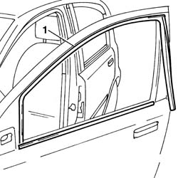
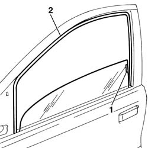

7005D18 front side door descending window glass channel r r
- Path
- Procedures > 70 FITTINGS > 7005 PASSENGER COMPARTMENT FRONT SIDE DOORS > 7005D front side door window glasses > 7005D18 front side door descending window glass channel r r
- Kind
- repair procedure (removal / refitting; the operation number is the code)
- Applies to
- all engines; all production periods
- Interactive page
- https://sloeber94.github.io/elrnDB-fPnd/en/#/2753053
Applies to: all engines; all production periods
 Removing
Removing
 Refitting
RefittingBefore carrying out the operations described below, make sure that the window is fully open.
Disconnect the battery negative terminal.
7005E12 corner cover of one front side door, lh or rh r r
For versions with electrically-operated exterior rear view mirrors, carry out the operation:
7005R30 electrically controlled door mirror (one) - r+r
For versions with manually0-operated exterior rear view mirrors, carry out the operation:
7005R10 manually controlled door mirror (one) - r+r
1. Withdraw and remove the descending window glass runner.

Applies to: all engines; all production periods
Refitting
RemovingCheck that the descending window glass runner is undamaged.
1. Lift the window glass until its fixing is accessible.
Tilt the window glass forwards slightly and position the runner in the rear guide.
Fit the runner in the front guide.
2. Fit the runner in its seating in the door frame.
Secure the attachment component in the runner.

Applies to: all engines; all production periods
Check that the window is working properly.
For versions with manually-operated exterior rear view mirrors, carry out the operation:
7005R10 manually controlled door mirror (one) - r+r
For versions with electrically-operated exterior rear view mirrors, carry out the operation:
7005R30 electrically controlled door mirror (one) - r+r
7005E12 corner cover of one front side door, lh or rh r r
Connect the battery negative terminal.
Topics linked from this page (3)
- 7005E12 corner cover of one front side door, lh or rh r r
- 7005R10 manually controlled door mirror (one) - r+r
- 7005R30 electrically controlled door mirror (one) - r+r